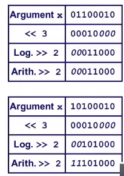

《CSAPP》读书笔记（2）：信息的表示和处理
信息存储
- 现代计算机是建立在对信息的bit级表示上的，大多数计算机是使用8位的块，即字节
- 机器级程序将内存视为一个非常大的字节数组，称为虚拟内存
- 内存中的每个字节由一个唯一的数字表示，称为它的地址。所有可能地址的集合称为虚拟地址空间，当然这只是展现给程序的概念性印象，具体实现见第9章
16进制表示法
用0-1bit的串来表示是很麻烦的，因此采用的是16进制表示法。
字长
每台计算机都有一个字长，也就是平常所谓的32位、64位机器。它决定着虚拟地址空间的大小（虚拟内存的字节总数）
我们称呼程序为“32位程序”或“64位程序”，针对该程序是如何编译的，而不是具体运行的机器类型。
以C语言为例，其不同的数据类型占多少字节的内存空间，是受编译器说了算
寻址和字节顺序
对于跨越多个字节的对象，需要建立的规则就是：这个对象的地址是什么，以及在内存中如何排列组成对象的这些字节？
- 几乎所有计算机都是以该对象所使用字节中最小的地址，作为对象的地址。
- 接下来对于所有字节，有两种规则的排序：
- 小端法（little endian）：大多数Intel兼容机采用的方法，对象的最低有效字节放在内存的低地址端
- 大端法（big endian）：IBM 和Oracle的机器，对象的最低有效字节放在内存的低地址端
字符的表示
对于文本（字符数组）的表示方法，链接中的视频是个很好的说明：
https://www.bilibili.com/video/av23469929?from=search&seid=3003390791592500042
布尔代数
英国数学家乔治$\cdot$布尔所创立的逻辑体系，也是现代计算机的基础之一；香农是第一个把布尔运算和数字电路联系起来的人（1937年的硕士论文）。
C语言的位级运算和逻辑运算
&，|，~：C语言支持按位布尔运算&&，||，！：C语言还提供了一组逻辑运算符，很容易和位运算混淆；此外，逻辑运算符支持短路特性
C语言的移位运算
C语言中包括三种移位操作，三者实现如下：
- 左移（<<）：移出去的位丢弃，空缺位（vacant bit）用 0 填充
- 右移（>>）
- 逻辑右移：移出去的位丢弃，空缺位（vacant bit）用 0 填充；
- 算术右移：移出去的位丢弃，空缺位（vacant bit）用符号位来填充。
